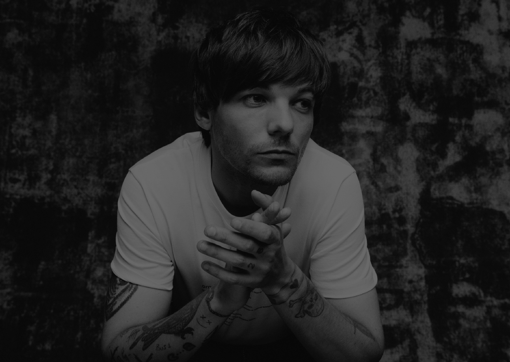

LOUIS


HOMETOWN:
South Yorkshire, England
HIS START:
At 11 years old he took acting
lessons received small parts on
television dramas. He competed
in season 7 of The X Factor,
where he was grouped with his
later bandmates.
ONE DIRECTION:
Louis became a singer and
songwriter for One Direction
and released five albums from
2011 to 2015, which hit number
one across the globe.
SOLO ALBUMS:
In 2016 he released the single
"Back to You," with Bebe Rexha.
He released his first album,
Walls, in 2020.
X FACTOR:
Louis returned to The X Factor
as a judge and mentor.
In 2018, one of his protégés,
Dalton Harris, won season 15 of
the show.
FUN FACTS:
- He is the oldest member
- He wrote "A.M."